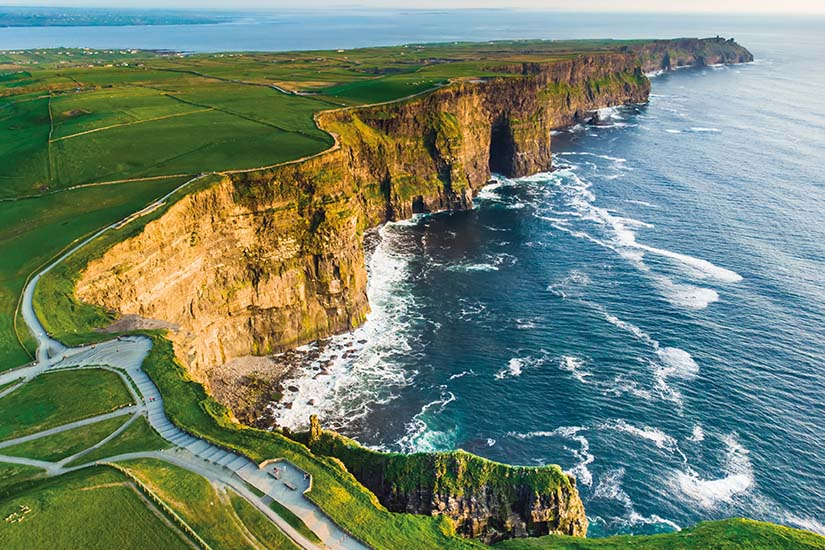

L'Irlande est une île située à l'ouest de l'Europe, entourée par l'océan Atlantique et la mer d'Irlande. C'est un pays riche en histoire, en culture et en traditions, avec des paysages naturels spectaculaires. Connue pour ses pubs animés, sa musique traditionnelle et sa bière, l'Irlande attire des millions de touristes chaque année. Dublin, la capitale de l'Irlande, est une ville animée et cosmopolite avec une scène artistique et culturelle florissante, une vie nocturne animée et des monuments historiques tels que le château de Dublin et la cathédrale Christ Church.
L'Irlande est également célèbre pour sa beauté naturelle. Des collines verdoyantes de l'intérieur aux falaises escarpées de la côte atlantique, l'Irlande est un paysage sauvage et époustouflant. Le Ring of Kerry, une route touristique célèbre qui serpente à travers le paysage vallonné de la côte sud-ouest, offre une vue imprenable sur la mer et les montagnes. Les falaises de Moher, sur la côte ouest, sont une autre attraction touristique populaire, avec des falaises qui s'élèvent à plus de 200 mètres au-dessus de l'océan Atlantique.
l'Irlande est connue pour sa culture et ses traditions uniques. La langue irlandaise, le gaélique, est toujours parlée dans certaines parties du pays et de nombreuses coutumes anciennes sont encore vivaces. La Saint-Patrick, la fête nationale de l'Irlande, est célébrée chaque année le 17 mars et est une occasion pour les Irlandais du monde entier de se réunir et de célébrer leur culture. Le folklore irlandais, avec ses fées, ses lutins et ses géants, est également une partie importante de la culture du pays et continue d'être transmis de génération en génération.
L'Irlande est également connue pour sa cuisine délicieuse, qui est en grande partie basée sur des ingrédients locaux frais tels que l'agneau, les fruits de mer, les pommes de terre et le chou. Les plats traditionnels irlandais tels que le ragoût d'agneau irlandais, le colcannon et le soda bread sont appréciés dans le monde entier. L'Irlande est également devenue célèbre pour ses pubs, où les locaux et les visiteurs peuvent profiter d'une pinte de bière Guinness fraîche ou d'un verre de whisky irlandais tout en écoutant de la musique traditionnelle. L'Irlande offre une expérience unique à tous ceux qui la visitent, mélangeant l'histoire, la culture, la nature et la nourriture pour créer une destination de voyage inoubliable.
L'Irlande est également un pays avec une forte tradition littéraire, ayant produit de nombreux écrivains renommés tels que James Joyce, W.B. Yeats et Samuel Beckett. La ville de Dublin en particulier est considérée comme un centre de la littérature irlandaise, avec de nombreuses rues et bâtiments liés à des écrivains célèbres. La bibliothèque du Trinity College à Dublin abrite également le célèbre livre de Kells, un manuscrit enluminé datant du IXe siècle et considéré comme l'une des plus belles œuvres d'art médiévales. Les festivals littéraires, tels que le Festival international de littérature de Dublin, sont également populaires en Irlande et offrent une occasion unique de célébrer la littérature et les écrivains irlandais.